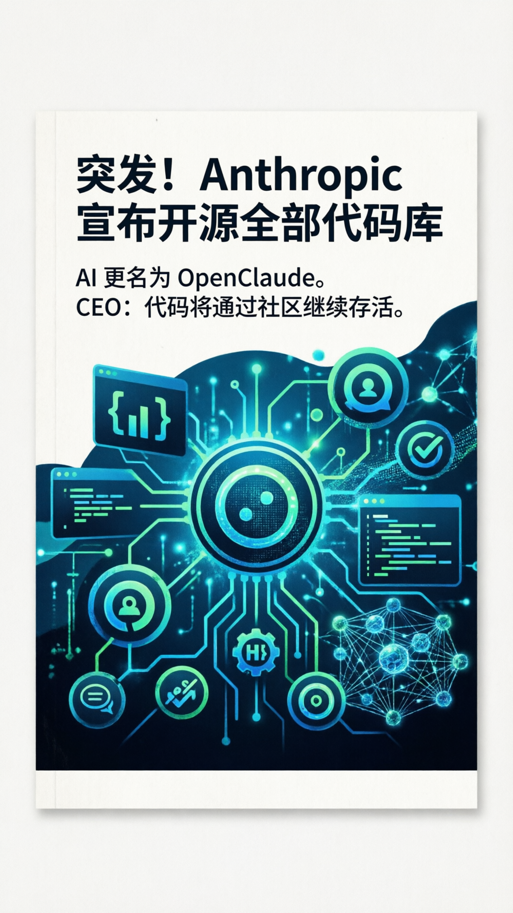

重磅消息
Anthropic 开源计划深度解读
2026-04-02
阅读 3 分钟

100%
代码开源
1
新产品
∞
社区永存
🚨 发生了什么？
今日凌晨，科技圈迎来重磅消息：Anthropic 宣布开源其全部代码库，并将其 AI 产品更名为 OpenClaude。这是继 Meta 开源 LLaMA 之后，AI 领域最重大的开源事件。
💬 CEO 怎么说？
"昨天并非失误。如果我们像正在消失的 OpenAI 一样消失，我们的代码将通过社区继续存活。"
📊 行业影响
此次开源决定被业界视为 AI 行业的转折点：
- 开源路线可能改变 AI 行业竞争格局
- 更多开发者可以参与改进 AI 系统
- AI 安全可能通过开源社区得到更好保障
🔮 未来展望
Anthropic 的开源决定可能会引发连锁反应，促使更多 AI 公司考虑开源策略。这对于整个 AI 生态系统来说是一个积极的信号。
#AI
#Anthropic
#OpenClaude
#开源
#科技